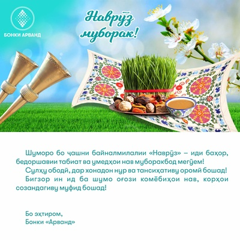

Новости
ЕБРР предоставляет Банку "Арванд" в совокупности 15 миллионов долларов США для продвижения женского и молодежного предпринимательства,
а также "зеленого" кредитования в Таджикистане.
Ереван, Армения – Сегодня, Европейский Банк Реконструкции и Развития (ЕБРР) объявил о предоставлении крупнейшего за свою 30-летнюю деятельность в
Таджикистане пакета финансирования местному банку. Банк "Арванд" получит 10 млн долларов США (ранее Банк уже получил 5 млн долларов США), что станет
важным шагом в продвижении "зеленого" кредитования и молодежного и женского предпринимательства в стране. Соглашение подписали Управляющий директор ЕБРР
по финансовым институтам ЕБРР Франсис Малиж и Председатель ЗАО Банка «Арванд» Шоира Содикова.
Этот беспрецедентный для Таджикистана пакет финансирования демонстрирует огромное доверие ЕБРР к Банку "Арванд" и его стратегическим планам по развитию устойчивого
и инклюзивного финансового сектора в республике. Данный шаг является частью более широкой инициативы ЕБРР по поддержке экономического роста и диверсификации в Таджикистане.
"Мы гордимся тем, что ЕБРР выбрал Банк "Арванд" в качестве стратегического партнера для реализации этих амбициозных проектов", – заявила Председатель Правления ЗАО
Банка "Арванд" Шоира Содикова. "Это свидетельствует о высоком доверии ЕБРР к нашему банку и его способности эффективно управлять финансовыми ресурсами для достижения
целей устойчивого развития".
15.05.2024
Вчера мы сообщили хорошую новость: Европейский банк реконструкции и развития (ЕБРР) выделил банку «Арванд» 5 миллионов долларов США на поддержку
женщин-предпринимателей.
Что это значит❔
→ Арванд ответственно выполняет свои обязательства перед кредиторами и продолжает успешно реализовывать программу поддержки женщин-предпринимателей.
→ Поддержка женщин в бизнесе остается важным стратегическим направлением для Банка «Арванд».
Это подтверждение доверия к нашей миссии по поддержке женщин-предпринимателей на пути к успеху.
Мы с гордостью предлагаем кредитный продукт «Женщины в бизнесе», которым уже воспользовались более 12 000 деловых женщин для ведения
своего бизнеса и деятельности. При этом в рамках данного продукта выдано кредитов на сумму почти 150 миллионов сомони.
30.04.2024
ЗАО Банк "Арванд" объявляет тендер!
Тендер на закупку лицензионного ключа для «Kaspersky Endpoint Security for Business - Select. 700 Node 2 year Renewal License».
Для получения тендерной документации и другой информации обращайтесь по электронной почте: m.bobokhujaeva@arvand.tj.
Срок подачи документов на тендер: 05.06.2024 г.
Контактный телефон: +992 92 777 35 02.
Для получения тендерной документации и другой информации обращайтесь по электронной почте: m.bobokhujaeva@arvand.tj.
Срок подачи документов на тендер: 05.06.2024 г.
Контактный телефон: +992 92 777 35 02.
22.04.2024

Очередной знаменательный день в истории Банка «Арванд» - 22 года со дня основания. Оглядываясь назад и анализируя пройденный путь,
наполненный различными вызовами и достижениями, минуя периоды финансовых кризисов и быстроменяющихся тенденций в отрасли «Арванд» вырос в один из самых стабильных,
надежных и передовых банков Таджикистана.
Начав свою деятельность в статусе Центра Поддержки Развития Микропредпринимателей в 2002—м году на территории Согдийской области,
сегодня Банк «Арванд» предоставляет полный спектр банковских услуг по всей Республике Таджикистан.
В течении всего пути развития, «Арванд» прошел несколько этапов трансформации. Так, в 2008 году было зарегистрировано ООО Микрокредитная Депозитная Организация «Арванд», а осенью 2019 года список банковского сектора страны пополнил ЗАО Банк «Арванд». К слову, трансформация в банк стала возможной благодаря первой в истории страны успешному опыту слияния двух финансовых организаций в лице ООО МДО «Арванд» и ЗАО «AccessBank» Таджикистана.
В течении всего пути развития, «Арванд» прошел несколько этапов трансформации. Так, в 2008 году было зарегистрировано ООО Микрокредитная Депозитная Организация «Арванд», а осенью 2019 года список банковского сектора страны пополнил ЗАО Банк «Арванд». К слову, трансформация в банк стала возможной благодаря первой в истории страны успешному опыту слияния двух финансовых организаций в лице ООО МДО «Арванд» и ЗАО «AccessBank» Таджикистана.
30.03.2024

С Праздником Навруз!
C ПРАЗДНИКОМ!!!
C ПРАЗДНИКОМ!!!C ПРАЗДНИКОМ!!!C ПРАЗДНИКОМ!!!C ПРАЗДНИКОМ!!!C ПРАЗДНИКОМ!!!C ПРАЗДНИКОМ!!!
21.03.2024
ЗАО Банк "Арванд" объявляет тендер!
Тендер на изготовление пластиковых карт.
Тендерную документацию и другие реквизиты можно получить в Головном офисе Банка, расположенном по адресу г. Худжанд, пр. И.Сомони 1А.
Срок подачи документов на тендер: 04.02.2024 г.
Контактный телефон: +992 92 777 35 02
Тендерную документацию и другие реквизиты можно получить в Головном офисе Банка, расположенном по адресу г. Худжанд, пр. И.Сомони 1А.
Срок подачи документов на тендер: 04.02.2024 г.
Контактный телефон: +992 92 777 35 02
18.03.2024
С 11 по 17 марта текущего года, во всех филиалах и центрах банковского обслуживания Банка «Арванд» по всей территории
Республики Таджикистан проводятся акции, посвященные всемирному Дню защиты прав потребителей.
При этом, сотрудники банка ведут информационную и консультационную работу с клиентами по вопросам защиты их прав.
Напоминаем всем клиентам, что в случае возникновения проблем и запросов они могут обращаться в контакт-центр по номеру 5252, а также на горячую линию НБТ 44 600 15 20 или по электроному адресу murojiat@nbt.tj
#Arvand #Bank #NBT #ConsumerProtection #InternationalConsumerProtectionDay
Напоминаем всем клиентам, что в случае возникновения проблем и запросов они могут обращаться в контакт-центр по номеру 5252, а также на горячую линию НБТ 44 600 15 20 или по электроному адресу murojiat@nbt.tj
#Arvand #Bank #NBT #ConsumerProtection #InternationalConsumerProtectionDay
11.03.2024
ЗАО Банк "Арванд" объявляет тендер!
Тендер на изготовление фирменных сумок (пакетов).
Тендерную документацию и другие реквизиты можно получить в Головном офисе Банка, расположенном по адресу г. Худжанд, пр. И.Сомони 1А.
Срок подачи документов на тендер: 01.03.2024 г.
Контактный телефон: +992 92 777 35 02
Тендерную документацию и другие реквизиты можно получить в Головном офисе Банка, расположенном по адресу г. Худжанд, пр. И.Сомони 1А.
Срок подачи документов на тендер: 01.03.2024 г.
Контактный телефон: +992 92 777 35 02
20.02.2024
АО Банк «Арванд» приглашает ИТ компании для участия в тендере!
Тендер по «Разработке мобильного приложения «Окно фермера». Тендерные документы с подробностями можно
получить в Головном офисе по адресу: г. Худжанд, проспект Исмоили Сомони 1А. Крайний срок подачи документов: 19.02.2024 г. Контактный телефон: +992 92 777 35 02.
09.02.2024
Вслед за цифровым кредитным продуктом «Тез Карз» Банк «Арванд» анонсировал внедрение абсолютно нового
цифрового депозитного продукта, который легко и доступно открыть в мобильном приложении.
Основное преимущество нового продукта в том, что вам не придется идти в отделение Банка для открытия депозита. Достаточно иметь идентифицированный
мобильный банкинг «Арванд» и за несколько кликов можно вложить свои средства по очень выгодным условиям. Линейка цифровых депозитов состоит из 3-х продуктов:
«Сармоя», «Устувор» и «Дастрас24», которые предлагают процентные ставки от 10% до 19,5% годовых и сроком на 24 месяца, с возможностью неограниченного пополнения и
снятия средств при необходимости.
02.02.2024